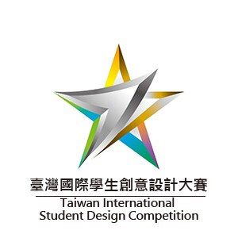

視覺傳達設計類大賽

台灣國際學生創意設計大賽
由亞洲大學視覺傳達設計系所執行的設計大賽。結合教育部現有藝術與設計人才培育計畫的競爭優勢， 藉由臺灣自主性地舉辦國際級的學生設計競賽，除了用以鼓勵全球藝術與設計院校學生參與競賽之外，更可透過設計競賽活動的舉辦期間，充分善用媒體與文宣推廣臺灣。 藉由國際專家學者來臺擔任評審，或是榮獲獎項的國外學生來臺領獎，進而認識臺灣與推廣臺灣設計教育的成果。
墨西哥國際海報雙年展
墨西哥國際海報雙年展自1990年開始，已有超過30年的歷史，與芬蘭拉赫第國際海報三年展、波蘭華沙國際海報雙年展、日本富山國際海報三年展、美國科羅拉多國際海報雙年展名列全球五大海報展，它也是全球三大雙年展之一。
墨西哥國際海報雙年展每隔兩年召集國際海報設計師參賽，並且舉辦兩年一度的全球設計大會，累積擁有超過40,000件來自全球各地的海報收藏，因此於墨西哥舉辦長期性的展覽，並且定期發行年鑑及設計書籍。
法國蕭蒙國際海報節國際競賽學生展
蕭蒙致力塑造一個永遠的設計中心，將深層的平面設計問題開放給世人討論。過去二十多年來，這個夢想始終由蕭蒙這個小鎮的奉獻和設計師們的信念支持著，
蕭蒙國際海報節國際競賽學生競賽是美術、傳播及設計學校的最高點，本獎不僅能證明設計師個人的創意，在激勵同儕競爭的同時，更開放給所有人一起解開心中對平面設計的疑惑。
莫斯科國際平面設計雙年展金蜂獎
具ICOGRADA與IBCC之認證，是相當具規模的國際賽事。金蜂獎收集來自世界各地，最優秀的平面設計作品，於1992年舉辦第一屆競賽，除2002年暫時停辦外，
爾後每兩年定期舉辦新一屆之競賽，至今已超過20年之歷史，至2020年已經順利舉辦第十四屆金蜂獎，共計來自90個國家的設計師參展。
日本富山國際海報三年展
日本富山國際海報三年展（簡稱IPT）由富山縣美術館主辦，每三年舉辦一屆，至今已經連續舉辦12屆。與墨西哥國際海報雙年展、芬蘭拉赫第國際海報三年展、波蘭華沙國際海報雙年展、美國科羅拉多國際海報雙年展名列全球五大海報展。
日本富山國際海報三年展，以促進與助長設計師及設計學生的全球性對話為目的。為了展示世界海報設計的現況跟成果，因此每三年向全世界公開徵募、評審並將展示得獎作品。二十餘年來，在海報設計界有良好的聲譽，吸引了許多當代海報設計家參賽。
U30+學生類於2018成立，原鼓勵30歲以下的申請人提交作品，在2021年放寬參賽資格，將30歲以上但具有學生身分者納入，以鼓勵年輕一代的成員對海報設計領域產生興趣，此類別旨在為學生和專業人士提供參與日本富山國際海報三年展的機會。